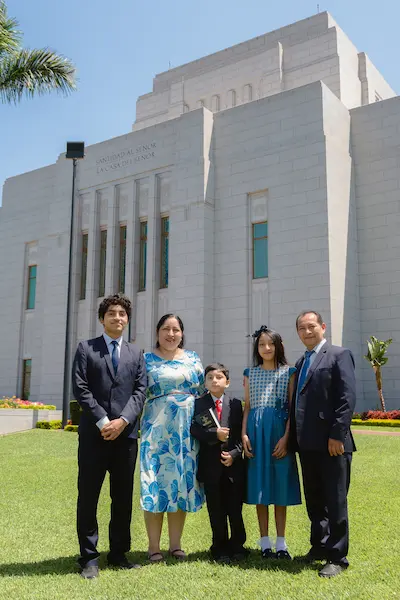

Vilma Ramos | WDD 130

Hello! My name is Vilma Ramos, and I am from Lima, Peru. I am an Industrial Engineer with a Master's degree in Business Administration (MBA). I have professional experience in financial operations, customer service, and team management. I enjoy learning new technologies and developing skills that help me grow personally and professionally. I am especially interested in web development, data analysis, and finding creative solutions to everyday challenges. In my free time, I love spending quality time with my family, learning new things, and participating in activities that help others. I am excited to study WDD 130 because I want to improve my programming skills, learn how to design attractive and functional websites, and apply this knowledge to future personal and professional projects. I believe that continuous learning opens doors to new opportunities and helps us achieve our goals.